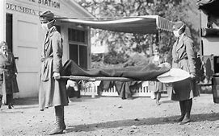

Ward-Thomas Museum


1918 Hospital
Ward — Thomas
Museum
Home of the Niles Historical Society
503 Brown Street Niles, Ohio 44446
Click here to become a Niles Historical Society Member or to renew your membership
Click on any photograph to view a larger image, click on image again to zoom into photograph.
1918 Hospital 
During the influenza epidemic of 1918-19, many houses in Niles and people were co-opted to use as emergency hospitals and staff. Two groups of staff are posed outside the Bentley homestead, which was located on Robbins Ave. The 1920 US Census shows an Anson Bentley (President of Galvanizing Company) living at 923 Robbins Avenue. Across the street was the office of Dr. Swaney. The Emergency Hospital and staff located in Niles, Ohio in 1918 in the Bentley home on Robbins Avenue. |
||
| |
||
|
The house at 923 Robbins Avenue as it appears today(2020). |
Throughout
the City of Niles, schools, large houses, and large factory buildings
were used as hospitals where the patients of the 1918 Influenza
Pandemic could be isolated and treated.
|
Composite image with the 1918 hospital staff and the 923 Robbins house. |
PO1.2056 |
Two photographs of the hospital staff who assisted patients at 923 Robbins during the 1918 Spanish Influenza pandemic. |
PO1.2056b |
|
|
||
{kind=link}
{kind=link}
{kind=link}
{kind=link}